スリング をドロップするmob一覧
一覧ページへ
| 骸骨騎士 | アンデット | 一般3 | |||||||
|---|---|---|---|---|---|---|---|---|---|
 | 鈍器(360) | スリング(240) | 矢(360) | 職業鎧(200) | 爪(180) | 能力向上1(140) | 魔弾(360) | ||
| グール | アンデット | 一般2 | |||||||
 | 投擲(380) | スリング(250) | イベント(380) | 足(210) | 爪(190) | 帰還(150) | |||
| スプーク | アンデット | セミ1 | |||||||
 | 投擲(390) | スリング(260) | 状態異常回復1(390) | 腰(220) | 爪(200) | 帰還(160) | |||
| スリップワーカー | アンデット | 一般1 | |||||||
 | スリング(410) | ステッキ(270) | 弾(410) | 兜・帽子(230) | 首(210) | ブローチ(120) | |||
| ルナティック | アンデット | 一般2 | |||||||
 | スリング(380) | ステッキ(250) | 弾(380) | 足(210) | 首(190) | ブローチ(130) | |||
| プレーガー | アンデット | 一般3 | |||||||
 | スリング(360) | ステッキ(240) | 弾(360) | 腰(200) | 首(180) | ブローチ(140) | |||
| ジャンキー | アンデット | セミ1 | |||||||
 | スリング(390) | ステッキ(260) | 鍵(30) | 兜・帽子(220) | イヤリング(200) | ブローチ(150) | |||
| アライブコープス | アンデット | ボス1 | |||||||
 | スリング(470) | ステッキ(310) | 鍵(50) | 足(260) | 首(240) | ブローチ(160) | |||
| ストラグラー | 人間 | 一般1 | |||||||
 | 杖(410) | スリング(270) | 弾(410) | 腰(230) | 首(210) | 能力向上2(160) | 本(410) | ||
| 堕落魔法師 | 人間 | 一般3 | |||||||
 | 杖(360) | スリング(240) | イベント(360) | マント(200) | 首(180) | 能力向上2(140) | 本(360) | ||
| ブラックメイジ | 人間 | 一般4 | |||||||
 | 杖(300) | スリング(200) | 弾(300) | グローブ(170) | 爪(150) | 宝石(120) | 本(300) | ||
| ソーサラー | 人間 | セミ1 | |||||||
| 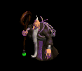 | 杖(390) | スリング(260) | 状態異常回復2(100) | 職業鎧(220) | 首(200) | 能力向上2(160) | 本(390) | ||
| ドゥームキャスター | 人間 | ボス1 | |||||||
 | 杖(470) | スリング(310) | 弾(470) | 兜・帽子(260) | 首(240) | 能力向上2(190) | 本(470) | ||
| 降神術師 | 人間 | セミ2 | |||||||
 | 鞭(420) | スリング(280) | 弾(420) | 腰(230) | イヤリング(210) | 肩刺青(140) | |||
| キクロップス | 人間 | セミ1 | |||||||
 | スリング(390) | 杖(260) | 弾(390) | 足(220) | 爪(200) | 帰還(160) | 本(260) | ||
| チタン | 人間 | ボス1 | |||||||
 | スリング(470) | 杖(310) | 弾(470) | 足(260) | 冠(240) | 帰還(190) | 本(310) | ||
| コボルト | 悪魔 | 一般1 | |||||||
 | 牙(410) | スリング(270) | 弾(410) | 腰(230) | 爪(210) | 肩刺青(120) | 双剣(410) | ||
| グレムリン | 悪魔 | 一般2 | |||||||
| 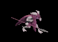 | 牙(380) | スリング(250) | 弾(380) | 腰(210) | 爪(190) | 肩刺青(130) | 双剣(380) | ||
| ゴブリン | 悪魔 | 一般3 | |||||||
 | 牙(360) | スリング(240) | 弾(360) | 腰(200) | 爪(180) | 肩刺青(140) | 双剣(360) | ||
| ファミリア | 悪魔 | 一般4 | |||||||
 | 牙(300) | スリング(200) | 弾(300) | 腰(170) | 爪(150) | 肩刺青(150) | 双剣(300) | ||
| インプ | 悪魔 | セミ1 | |||||||
 | 牙(390) | スリング(260) | 弾(390) | 腰(220) | 爪(200) | 肩刺青(160) | 双剣(390) | ||
| リザードライダー | 悪魔 | 一般2 | |||||||
| 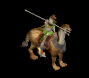 | スリング(380) | 槍(250) | イベント(380) | 職業鎧(210) | 首(190) | 能力向上2(150) | 箒(250) | ||
| ナーガランサー | 悪魔 | ボス2 | |||||||
 | スリング(490) | 弓(330) | 矢(490) | 職業鎧(270) | 首(250) | 能力向上2(200) | 銃(330) | 魔弾(490) | |
| オーガソルジャー | 悪魔 | 一般4 | |||||||
 | 鈍器(300) | スリング(200) | 弾(300) | 鎧(170) | イヤリング(150) | 能力向上1(120) | |||
| 飛海月 | 動物 | 一般1 | |||||||
 | 鞭(410) | スリング(270) | 弾(410) | 腰(230) | 手首(210) | 帰還(160) | |||
| エアスライム | 動物 | 一般2 | |||||||
 | 鞭(380) | スリング(250) | 弾(380) | 腰(210) | イヤリング(190) | 特殊1(150) | |||
| アクアスライム | 動物 | 一般3 | |||||||
 | 鞭(360) | スリング(240) | 弾(360) | 腰(200) | 手首(180) | 帰還(140) | |||
| 水晶烏賊 | 動物 | セミ1 | |||||||
 | 鞭(390) | スリング(260) | 弾(390) | 腰(220) | 手首(200) | 能力向上2(160) | |||
| クラーケン | 動物 | ボス1 | |||||||
| 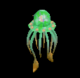 | 鞭(470) | スリング(310) | 弾(470) | 腰(260) | 手首(240) | 帰還(190) | |||
| 蟲 | 動物 | 一般1 | |||||||
 | 鈍器(410) | スリング(270) | イベント(410) | マント(230) | 冠(210) | 帰還(160) | |||
| マゴット | 動物 | 一般3 | |||||||
| 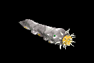 | 鈍器(360) | スリング(240) | イベント(360) | マント(200) | 冠(180) | 帰還(140) | |||
| クリーパー | 動物 | セミ1 | |||||||
| 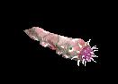 | 鈍器(390) | スリング(260) | イベント(390) | マント(220) | 冠(200) | 帰還(160) | |||
| ディガー | 動物 | セミ1 | |||||||
 | 弓(390) | スリング(260) | 弾(390) | 職業鎧(220) | 指輪(200) | 能力向上1(160) | 銃(390) | ||
| ファイアブロアー | 神獣 | 一般1 | |||||||
 | 双剣(270) | スリング(100) | 牙(270) | ||||||
| フーフー | 神獣 | 一般2 | |||||||
| 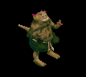 | スリング(380) | 杖(250) | 本(250) | ||||||
| ブレイジャー | 神獣 | 一般3 | |||||||
 | 双剣(240) | スリング(100) | 牙(240) | ||||||
| 炎鬼 | 神獣 | セミ1 | |||||||
 | スリング(390) | 杖(260) | 本(260) | ||||||
| 火炎悪魔 | 神獣 | ボス1 | |||||||
 | 双剣(310) | スリング(100) | 牙(310) | ||||||
| メタルゴーレム | 神獣 | セミ3 | |||||||
 | 鎌(100) | 両手剣(100) | スリング(300) | ||||||
| シャドウス | 神獣 | セミ2 | |||||||
 | 鎌(100) | 両手剣(100) | スリング(280) | ||||||
| ビビッドブラック | 神獣 | ボス3 | |||||||
 | 水晶(340) | スリング(510) | 翼(340) | ||||||
| 骸骨騎士Ex | アンデット | 一般3 | |||||||
| 鈍器(360) | スリング(240) | 矢(360) | 職業鎧(200) | 爪(180) | 能力向上1(140) | 魔弾(360) | ||
| グールEx | アンデット | 一般2 | |||||||
| 投擲(380) | スリング(250) | イベント(380) | 足(210) | 爪(190) | 帰還(150) | |||
| スプークEx | アンデット | セミ1 | |||||||
| 投擲(450) | スリング(300) | 状態異常回復1(450) | 腰(250) | 爪(230) | 帰還(180) | |||
| スリップワーカーEx | アンデット | 一般1 | |||||||
| スリング(410) | ステッキ(270) | 弾(410) | 兜・帽子(230) | 首(210) | ブローチ(120) | |||
| ルナティックEx | アンデット | 一般2 | |||||||
| スリング(380) | ステッキ(250) | 弾(380) | 足(210) | 首(190) | ブローチ(130) | |||
| プレーガーEx | アンデット | 一般3 | |||||||
| スリング(360) | ステッキ(240) | 弾(360) | 腰(200) | 首(180) | ブローチ(140) | |||
| ジャンキーEx | アンデット | セミ1 | |||||||
| スリング(450) | ステッキ(300) | 鍵(30) | 兜・帽子(250) | イヤリング(230) | ブローチ(150) | |||
| アライブコープスEx | アンデット | ボス1 | |||||||
| スリング(1200) | ステッキ(800) | 鍵(60) | 足(670) | 首(600) | ブローチ(160) | |||
| ストラグラーEx | 人間 | 一般1 | |||||||
| 杖(410) | スリング(270) | 弾(410) | 腰(230) | 首(210) | 能力向上2(160) | 本(410) | ||
| 堕落魔法師Ex | 人間 | 一般3 | |||||||
| 杖(360) | スリング(240) | イベント(360) | マント(200) | 首(180) | 能力向上2(140) | 本(360) | ||
| ブラックメイジEx | 人間 | 一般4 | |||||||
| 杖(300) | スリング(200) | 弾(300) | グローブ(170) | 爪(150) | 宝石(120) | 本(300) | ||
| ソーサラーEx | 人間 | セミ1 | |||||||
| 杖(450) | スリング(300) | 状態異常回復2(110) | 職業鎧(250) | 首(230) | 能力向上2(180) | 本(450) | |||
| ドゥームキャスターEx | 人間 | ボス1 | |||||||
| 杖(1200) | スリング(800) | 弾(1200) | 兜・帽子(670) | 首(600) | 能力向上2(480) | 本(1200) | ||
| 降神術師Ex | 人間 | セミ2 | |||||||
| 鞭(650) | スリング(430) | 弾(650) | 腰(360) | イヤリング(330) | 肩刺青(140) | |||
| キクロップスEx | 人間 | セミ1 | |||||||
| スリング(450) | 杖(300) | 弾(450) | 足(250) | 爪(230) | 帰還(180) | 本(300) | ||
| チタンEx | 人間 | ボス1 | |||||||
| スリング(1200) | 杖(800) | 弾(1200) | 足(670) | 冠(600) | 帰還(480) | 本(800) | ||
| コボルトEx | 悪魔 | 一般1 | |||||||
| 牙(410) | スリング(270) | 弾(410) | 腰(230) | 爪(210) | 肩刺青(120) | 双剣(410) | ||
| グレムリンEx | 悪魔 | 一般2 | |||||||
| 牙(380) | スリング(250) | 弾(380) | 腰(210) | 爪(190) | 肩刺青(130) | 双剣(380) | |||
| ゴブリンEx | 悪魔 | 一般3 | |||||||
| 牙(360) | スリング(240) | 弾(360) | 腰(200) | 爪(180) | 肩刺青(140) | 双剣(360) | ||
| ファミリアEx | 悪魔 | 一般4 | |||||||
| 牙(300) | スリング(200) | 弾(300) | 腰(170) | 爪(150) | 肩刺青(150) | 双剣(300) | ||
| インプEx | 悪魔 | セミ1 | |||||||
| 牙(450) | スリング(300) | 弾(450) | 腰(250) | 爪(230) | 肩刺青(160) | 双剣(450) | ||
| リザードライダーEx | 悪魔 | 一般2 | |||||||
| スリング(380) | 槍(250) | イベント(380) | 職業鎧(210) | 首(190) | 能力向上2(150) | 箒(250) | |||
| ナーガランサーEx | 悪魔 | ボス2 | |||||||
| スリング(2000) | 弓(1330) | 矢(2000) | 職業鎧(1110) | 首(1000) | 能力向上2(800) | 銃(1330) | 魔弾(2000) | |
| オーガソルジャーEx | 悪魔 | 一般4 | |||||||
| 鈍器(300) | スリング(200) | 弾(300) | 鎧(170) | イヤリング(150) | 能力向上1(120) | |||
| 飛海月Ex | 動物 | 一般1 | |||||||
| 鞭(410) | スリング(270) | 弾(410) | 腰(230) | 手首(210) | 帰還(160) | |||
| エアスライムEx | 動物 | 一般2 | |||||||
| 鞭(380) | スリング(250) | 弾(380) | 腰(210) | イヤリング(190) | 特殊1(150) | |||
| アクアスライムEx | 動物 | 一般3 | |||||||
| 鞭(360) | スリング(240) | 弾(360) | 腰(200) | 手首(180) | 帰還(140) | |||
| 水晶烏賊Ex | 動物 | セミ1 | |||||||
| 鞭(450) | スリング(300) | 弾(450) | 腰(250) | 手首(230) | 能力向上2(180) | |||
| クラーケンEx | 動物 | ボス1 | |||||||
| 鞭(1200) | スリング(800) | 弾(1200) | 腰(670) | 手首(600) | 帰還(480) | ||||
| ワームEx | 動物 | 一般1 | |||||||
| 鈍器(410) | スリング(270) | イベント(410) | マント(230) | 冠(210) | 帰還(160) | |||
| マゴットEx | 動物 | 一般3 | |||||||
| 鈍器(360) | スリング(240) | イベント(360) | マント(200) | 冠(180) | 帰還(140) | ||||
| クリーパーEx | 動物 | セミ1 | |||||||
| 鈍器(450) | スリング(300) | イベント(450) | マント(250) | 冠(230) | 帰還(180) | ||||
| ディガーEx | 動物 | セミ1 | |||||||
| 弓(450) | スリング(300) | 弾(450) | 職業鎧(250) | 指輪(230) | 能力向上1(180) | 銃(450) | ||
| ファイアブロアーEx | 神獣 | 一般1 | |||||||
| スリング(410) | 牙(270) | 弾(410) | グローブ(230) | 手首(210) | 能力向上2(160) | 双剣(410) | ||
| フーフーEx | 神獣 | 一般2 | |||||||
| スリング(380) | 杖(250) | 弾(380) | グローブ(210) | 手首(190) | 能力向上2(150) | 本(250) | |||
| ブレイジャーEx | 神獣 | 一般3 | |||||||
| スリング(360) | 牙(240) | 弾(360) | グローブ(200) | 手首(180) | 能力向上2(140) | 双剣(240) | ||
| 炎鬼Ex | 神獣 | セミ1 | |||||||
| スリング(450) | 杖(300) | 弾(450) | グローブ(250) | 手首(230) | 能力向上2(180) | 本(300) | ||
| 火炎悪魔Ex | 神獣 | ボス1 | |||||||
| スリング(1200) | 牙(800) | 弾(1200) | グローブ(670) | 手首(600) | 能力向上2(480) | 双剣(800) | ||
| メタルゴーレムEx | 神獣 | セミ3 | |||||||
| 両手剣(800) | スリング(530) | 状態異常回復2(200) | 足(440) | 槍投擲機(400) | 腕刺青(160) | 鎌(800) | ||
| シャドウスEx | 神獣 | セミ2 | |||||||
| 両手剣(650) | スリング(430) | 盾(650) | グローブ(360) | 手首(330) | 特殊1(260) | 鎌(650) | ||
| ビビッドブラックEx | 神獣 | ボス3 | |||||||
| スリング(2800) | 翼(1870) | 弾(2800) | 兜・帽子(1560) | イヤリング(1400) | 特殊1(1120) | 水晶(1870) | ||
| 骸骨騎士Zin | アンデット | 一般3 | |||||||
| 鈍器(1560) | スリング(1040) | 矢(1560) | 職業鎧(870) | 爪(780) | 能力向上1(620) | 魔弾(1560) | ||
| グールZin | アンデット | 一般2 | |||||||
| 投擲(1380) | スリング(920) | イベント(1380) | 足(770) | 爪(690) | 帰還(550) | |||
| スプクZin | アンデット | セミ1 | |||||||
| 投擲(650) | スリング(430) | 状態異常回復1(650) | 腰(360) | 爪(330) | 帰還(260) | |||
| スリップワーカーZin | アンデット | 一般1 | |||||||
| スリング(1210) | ステッキ(810) | 弾(1210) | 兜・帽子(670) | 首(610) | ブローチ(120) | |||
| ルナティックZin | アンデット | 一般2 | |||||||
| スリング(1380) | ステッキ(920) | 弾(1380) | 足(770) | 首(690) | ブローチ(130) | |||
| プレーガーZin | アンデット | 一般3 | |||||||
| スリング(1560) | ステッキ(1040) | 弾(1560) | 腰(870) | 首(780) | ブローチ(140) | |||
| ジャンキーZin | アンデット | セミ1 | |||||||
| スリング(650) | ステッキ(430) | 鍵(60) | 兜・帽子(360) | イヤリング(330) | ブローチ(150) | |||
| アライブコープスZin | アンデット | ボス1 | |||||||
| スリング(1000) | ステッキ(670) | 鍵(130) | 足(560) | 首(500) | ブローチ(160) | |||
| ストラグラーZin | 人間 | 一般1 | |||||||
| 杖(1210) | スリング(810) | 弾(1210) | 腰(670) | 首(610) | 能力向上2(480) | 本(1210) | ||
| 堕落魔法師Zin | 人間 | 一般3 | |||||||
| 杖(1560) | スリング(1040) | イベント(1560) | マント(870) | 首(780) | 能力向上2(620) | 本(1560) | ||
| ブラックメイジZin | 人間 | 一般4 | |||||||
| 杖(1200) | スリング(800) | 弾(1200) | グローブ(670) | 爪(600) | 宝石(480) | 本(1200) | ||
| ソーサラーZin | 人間 | セミ1 | |||||||
| 杖(650) | スリング(430) | 状態異常回復2(160) | 職業鎧(360) | 首(330) | 能力向上2(260) | 本(650) | |||
| ドゥームキャスターZin | 人間 | ボス1 | |||||||
| 杖(1000) | スリング(670) | 弾(1000) | 兜・帽子(560) | 首(500) | 能力向上2(400) | 本(1000) | ||
| 降神術師Zin | 人間 | セミ2 | |||||||
| 鞭(750) | スリング(500) | 弾(750) | 腰(420) | イヤリング(380) | 肩刺青(140) | |||
| キクロップスZin | 人間 | セミ1 | |||||||
| スリング(650) | 杖(430) | 弾(650) | 足(360) | 爪(330) | 帰還(260) | 本(430) | ||
| チタンZin | 人間 | ボス1 | |||||||
| スリング(1000) | 杖(670) | 弾(1000) | 足(560) | 冠(500) | 帰還(400) | 本(670) | ||
| コボルトZin | 悪魔 | 一般1 | |||||||
| 牙(1210) | スリング(810) | 弾(1210) | 腰(670) | 爪(610) | 肩刺青(120) | 双剣(1210) | ||
| グレムリンZin | 悪魔 | 一般2 | |||||||
| 牙(1380) | スリング(920) | 弾(1380) | 腰(770) | 爪(690) | 肩刺青(130) | 双剣(1380) | |||
| ゴブリンZin | 悪魔 | 一般3 | |||||||
| 牙(1560) | スリング(1040) | 弾(1560) | 腰(870) | 爪(780) | 肩刺青(140) | 双剣(1560) | ||
| ファミリアZin | 悪魔 | 一般4 | |||||||
| 牙(1200) | スリング(800) | 弾(1200) | 腰(670) | 爪(600) | 肩刺青(150) | 双剣(1200) | ||
| インプZin | 悪魔 | セミ1 | |||||||
| 牙(650) | スリング(430) | 弾(650) | 腰(360) | 爪(330) | 肩刺青(160) | 双剣(650) | ||
| リザードライダーZin | 悪魔 | 一般2 | |||||||
| スリング(1380) | 槍(920) | イベント(1380) | 職業鎧(770) | 首(690) | 能力向上2(550) | 箒(920) | |||
| ナーガランサーZin | 悪魔 | ボス2 | |||||||
| スリング(1100) | 弓(730) | 矢(1100) | 職業鎧(610) | 首(550) | 能力向上2(440) | 銃(730) | 魔弾(1100) | |
| オーガソルジャーZin | 悪魔 | 一般4 | |||||||
| 鈍器(1200) | スリング(800) | 弾(1200) | 鎧(670) | イヤリング(600) | 能力向上1(480) | |||
| 飛海月Zin | 動物 | 一般1 | |||||||
| 鞭(1210) | スリング(810) | 弾(1210) | 腰(670) | 手首(610) | 帰還(480) | |||
| エアスライムZin | 動物 | 一般2 | |||||||
| 鞭(1380) | スリング(920) | 弾(1380) | 腰(770) | イヤリング(690) | 特殊1(550) | |||
| アクアスライムZin | 動物 | 一般3 | |||||||
| 鞭(1560) | スリング(1040) | 弾(1560) | 腰(870) | 手首(780) | 帰還(620) | |||
| 水晶烏賊Zin | 動物 | セミ1 | |||||||
| 鞭(650) | スリング(430) | 弾(650) | 腰(360) | 手首(330) | 能力向上2(260) | |||
| クラーケンZin | 動物 | ボス1 | |||||||
| 鞭(1000) | スリング(670) | 弾(1000) | 腰(560) | 手首(500) | 帰還(400) | ||||
| 蟲Zin | 動物 | 一般1 | |||||||
| 鈍器(1210) | スリング(810) | イベント(1210) | マント(670) | 冠(610) | 帰還(480) | |||
| マゴットZin | 動物 | 一般3 | |||||||
| 鈍器(1560) | スリング(1040) | イベント(1560) | マント(870) | 冠(780) | 帰還(620) | ||||
| クリーパーZin | 動物 | セミ1 | |||||||
| 鈍器(650) | スリング(430) | イベント(650) | マント(360) | 冠(330) | 帰還(260) | ||||
| ディガーZin | 動物 | セミ1 | |||||||
| 弓(650) | スリング(430) | 弾(650) | 職業鎧(360) | 指輪(330) | 能力向上1(260) | 銃(650) | ||
| ファイアブロアーZin | 神獣 | 一般1 | |||||||
| スリング(1210) | 牙(810) | 弾(1210) | グローブ(670) | 手首(610) | 能力向上2(480) | 双剣(810) | ||
| フーフーZin | 神獣 | 一般2 | |||||||
| スリング(1380) | 杖(920) | 弾(1380) | グローブ(770) | 手首(690) | 能力向上2(550) | 本(920) | |||
| ブレイジャーZin | 神獣 | 一般3 | |||||||
| スリング(1560) | 牙(1040) | 弾(1560) | グローブ(870) | 手首(780) | 能力向上2(620) | 双剣(1040) | ||
| 炎鬼Zin | 神獣 | セミ1 | |||||||
| スリング(650) | 杖(430) | 弾(650) | グローブ(360) | 手首(330) | 能力向上2(260) | 本(430) | ||
| 火炎悪魔Zin | 神獣 | ボス1 | |||||||
| スリング(1000) | 牙(670) | 弾(1000) | グローブ(560) | 手首(500) | 能力向上2(400) | 双剣(670) | ||
| メタルゴーレムZin | 神獣 | セミ3 | |||||||
| 両手剣(900) | スリング(600) | 状態異常回復2(230) | 足(500) | 槍投擲機(450) | 腕刺青(160) | 鎌(900) | ||
| シャドウスZin | 神獣 | セミ2 | |||||||
| 両手剣(750) | スリング(500) | 盾(750) | グローブ(420) | 手首(380) | 特殊1(300) | 鎌(750) | ||
| ビビッドブラックZin | 神獣 | ボス3 | |||||||
| スリング(1200) | 翼(800) | 弾(1200) | 兜・帽子(670) | イヤリング(600) | 特殊1(480) | 水晶(800) | ||
 | 弓(1560) | 片手剣(1040) | 矢(1560) | グローブ(900) | 手首(780) | 腕刺青(170) | クロー(1040) | 銃(1560) | 魔弾(1560) |
| シーク信者(踊り子)1 Zin | 人間 | セミ1 | |||||||
 | 宝石(90) | 首(260) | スリング(180) | 手首(140) | 状態異常回復1(40) | CP回復(50) | |||
| シーク信者(踊り子)2 Zin | 人間 | セミ3 | |||||||
 | 鎧(180) | 首(530) | スリング(350) | 鎧(280) | 腰(70) | 翼(110) | 水晶(110) | ||
| シーク信者(踊り子)4 Zin | 人間 | ボス3 | |||||||
 | 鎧(600) | 首(1800) | スリング(1200) | 手首(960) | 腰(240) | 翼(360) | 水晶(360) | ||
| シーク守護者1 Zin | 人間 | セミ1 | |||||||
 | 能力向上2(90) | 首(260) | スリング(180) | 手首(140) | 腰(40) | イベント(50) | |||
| シーク守護者2 Zin | 人間 | セミ3 | |||||||
 | 鍵(180) | 状態異常回復2(530) | スリング(350) | 鎧(280) | 腰(70) | 翼(110) | 水晶(110) | ||
| シーク守護者4 Zin | 人間 | ボス3 | |||||||
| 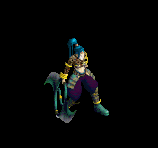 | 鎧(600) | ブローチ(1800) | スリング(1200) | 手首(960) | 腰(240) | 翼(360) | 水晶(360) | ||
| シーク天使1 Zin | 人間 | セミ1 | |||||||
| 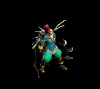 | 鎧(90) | 首(260) | スリング(180) | 手首(140) | 腰(40) | 翼(50) | 水晶(50) | ||
| シーク天使2 Zin | 人間 | セミ3 | |||||||
 | 鍵(180) | マント(530) | スリング(350) | 能力向上2(280) | 状態異常回復1(70) | イベント(110) | |||
| シーク天使3 Zin | 人間 | ボス2 | |||||||
 | 鎧(450) | ブローチ(1350) | スリング(900) | 手首(720) | 腰(180) | 翼(270) | 水晶(270) | ||
| 狂魔(狂った悪魔…) Zin | 悪魔 | 一般4 | |||||||
 | 宝石(130) | 爪(160) | スリング(70) | 鞭(40) | 矢(20) | HP回復(10) | 魔弾(20) | ||
| 狂魔(狂った悪魔…)2 Zin | 悪魔 | セミ2 | |||||||
 | 片手剣(360) | 状態異常回復2(440) | スリング(180) | 能力向上1(110) | 矢(60) | 兜・帽子(30) | クロー(360) | 魔弾(60) | |
| 狂魔(狂った悪魔…)4 Zin | 悪魔 | ボス2 | |||||||
 | 片手剣(1170) | 爪(1440) | スリング(590) | 鞭(360) | 矢(180) | 兜・帽子(90) | クロー(1170) | 魔弾(180) | |
| ゴールデンマスク Zin | 悪魔 | 一般4 | |||||||
| 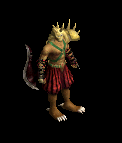 | 片手剣(130) | ブローチ(160) | スリング(70) | 能力向上1(40) | 状態異常回復1(20) | 兜・帽子(10) | クロー(130) | ||
| ゴールデンマスク3 Zin | 悪魔 | ボス2 | |||||||
 | 宝石(1170) | ブローチ(1440) | スリング(590) | 鞭(360) | 矢(180) | HP回復(90) | 魔弾(180) | ||
| 剣闘士1 Zin | 悪魔 | セミ2 | |||||||
 | 片手剣(360) | 爪(440) | スリング(180) | 鞭(110) | 状態異常回復1(60) | 兜・帽子(30) | クロー(360) | ||
| 剣闘士3 Zin | 悪魔 | ボス2 | |||||||
 | 片手剣(1170) | ブローチ(1440) | スリング(590) | 鞭(360) | 矢(180) | 兜・帽子(90) | クロー(1170) | 魔弾(180) | |
| 剣闘士4 Zin | 悪魔 | ボス3 | |||||||
 | 能力向上2(1560) | 爪(1920) | スリング(790) | 十字架(480) | 状態異常回復1(240) | 兜・帽子(120) | |||
| カメレオン Zin | 動物 | 一般3 | |||||||
 | 冠(90) | 鈍器(70) | スリング(50) | 能力向上1(40) | 弓(30) | HP回復(10) | 銃(30) | ||
| カメレオン1 Zin | 動物 | セミ1 | |||||||
 | 能力向上2(120) | 状態異常回復2(90) | スリング(70) | 鞭(50) | 弓(40) | 盾(20) | 銃(40) | ||
| カメレオン3 Zin | 動物 | ボス2 | |||||||
 | 宝石(630) | 宝石(450) | スリング(360) | 鞭(270) | 弓(180) | 盾(90) | 銃(180) | ||
| ラジエータカメ1 Zin | 動物 | セミ2 | |||||||
 | 冠(190) | 鈍器(140) | スリング(110) | 十字架(80) | 弓(60) | 盾(30) | 銃(60) | ||
| ラジエータカメ3 Zin | 動物 | ボス2 | |||||||
 | 冠(630) | ブローチ(450) | スリング(360) | 能力向上1(270) | 肩刺青(180) | HP回復(90) | |||
| 装甲亀 Zin | 動物 | セミ1 | |||||||
 | 冠(120) | 状態異常回復2(90) | スリング(70) | 鞭(50) | 弓(40) | 盾(20) | 銃(40) | ||
| 装甲亀3 Zin | 動物 | ボス1 | |||||||
| 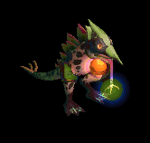 | 冠(350) | 鈍器(250) | スリング(200) | 鞭(150) | 弓(100) | 盾(50) | 銃(100) | ||
| 使徒1 Zin | 神獣 | セミ1 | |||||||
 | 能力向上2(160) | 鈍器(230) | スリング(120) | 笛(20) | CP回復(40) | 盾(90) | |||
| 使徒3 Zin | 神獣 | ボス2 | |||||||
| 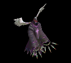 | 鎧(810) | 鈍器(1170) | スリング(630) | 笛(90) | 矢(180) | イベント(450) | 魔弾(180) | ||
| 使徒4 Zin | 神獣 | ボス3 | |||||||
| 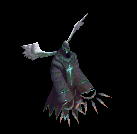 | 鎧(1080) | ブローチ(1560) | スリング(840) | 笛(120) | 状態異常回復1(240) | 盾(600) | |||
| 審判官1 Zin | 神獣 | セミ2 | |||||||
 | 鎧(250) | 状態異常回復2(360) | スリング(190) | 笛(30) | 肩刺青(60) | 盾(140) | |||
| 審判官3 Zin | 神獣 | ボス2 | |||||||
 | 鎧(810) | ブローチ(1170) | スリング(630) | 笛(90) | 腕刺青(180) | 盾(450) | |||
| 審判官4 Zin | 神獣 | ボス3 | |||||||
 | 能力向上2(1080) | 鈍器(1560) | スリング(840) | 笛(120) | 矢(240) | イベント(600) | 魔弾(240) | ||
| ウィークネス天使 Zin | 神獣 | セミ1 | |||||||
 | 鎧(160) | 鈍器(230) | スリング(120) | 笛(20) | 状態異常回復1(40) | 盾(90) | |||
| ウィークネス天使1 Zin | 神獣 | セミ2 | |||||||
 | 能力向上2(250) | ブローチ(360) | スリング(190) | 笛(30) | 矢(60) | 盾(140) | 魔弾(60) | ||
| ウィークネス天使3 Zin | 神獣 | ボス1 | |||||||
 | 鎧(450) | 鈍器(650) | スリング(350) | 笛(50) | 矢(100) | 盾(250) | 魔弾(100) | ||
| ウィークネス天使4 Zin | 神獣 | ボス3 | |||||||
 | 鎧(1080) | 鈍器(1560) | スリング(840) | 笛(120) | 矢(240) | 肩刺青(600) | 魔弾(240) | ||
| 泥棒 | 人間 | 一般1 | |||||||
| 杖(410) | スリング(270) | 弾(410) | 腰(230) | 首(210) | 能力向上2(160) | 本(410) | ||
| 堕落魔術師 | 人間 | 一般3 | |||||||
| 杖(360) | スリング(240) | イベント(360) | マント(200) | 首(180) | 能力向上2(140) | 本(360) | ||
| 黒魔術師 | 人間 | 一般4 | |||||||
| 杖(300) | スリング(200) | 弾(300) | グローブ(170) | 爪(150) | 宝石(120) | 本(300) | ||
| 魔術師 | 人間 | セミ1 | |||||||
| 杖(390) | スリング(260) | 状態異常回復2(100) | 職業鎧(220) | 首(200) | 能力向上2(160) | 本(390) | |||
| 破壊術師 | 人間 | ボス1 | |||||||
| 杖(470) | スリング(310) | 弾(470) | 兜・帽子(260) | 首(240) | 能力向上2(190) | 本(470) | ||
| 泥棒 Ex | 人間 | 一般1 | |||||||
| 杖(410) | スリング(270) | 弾(410) | 腰(230) | 首(210) | 能力向上2(160) | 本(410) | ||
| 堕落魔術師 Ex | 人間 | 一般3 | |||||||
| 杖(360) | スリング(240) | イベント(360) | マント(200) | 首(180) | 能力向上2(140) | 本(360) | ||
| 黒魔術師 Ex | 人間 | 一般4 | |||||||
| 杖(300) | スリング(200) | 弾(300) | グローブ(170) | 爪(150) | 宝石(120) | 本(300) | ||
| 魔術師 Ex | 人間 | セミ1 | |||||||
| 杖(450) | スリング(300) | 状態異常回復2(110) | 職業鎧(250) | 首(230) | 能力向上2(180) | 本(450) | |||
| 破壊術師 Ex | 人間 | ボス1 | |||||||
| 杖(1200) | スリング(800) | 弾(1200) | 兜・帽子(670) | 首(600) | 能力向上2(480) | 本(1200) | ||
| 死の影 | 神獣 | セミ2 | |||||||
| 鎌(100) | 両手剣(100) | スリング(280) | ||||||
| 深淵の強者 | 神獣 | ボス3 | |||||||
| 水晶(340) | スリング(510) | 翼(340) | ||||||
| 死の影 Ex | 神獣 | セミ2 | |||||||
| 両手剣(650) | スリング(430) | 盾(650) | グローブ(360) | 手首(330) | 特殊1(260) | 鎌(650) | ||
| 深淵の強者 Ex | 神獣 | ボス3 | |||||||
| スリング(2800) | 翼(1870) | 弾(2800) | 兜・帽子(1560) | イヤリング(1400) | 特殊1(1120) | 水晶(1870) | ||
| ゼリーフィッシュ | 動物 | 一般1 | |||||||
| 鞭(410) | スリング(270) | 弾(410) | 腰(230) | 手首(210) | 帰還(160) | |||
| スライム | 動物 | 一般2 | |||||||
| 鞭(380) | スリング(250) | 弾(380) | 腰(210) | イヤリング(190) | 特殊1(150) | |||
| オーカーゼリー | 動物 | 一般3 | |||||||
| 鞭(360) | スリング(240) | 弾(360) | 腰(200) | 手首(180) | 帰還(140) | |||
| クリスタルイカ | 動物 | セミ1 | |||||||
| 鞭(390) | スリング(260) | 弾(390) | 腰(220) | 手首(200) | 能力向上2(160) | |||
| ダイオウイカ | 動物 | ボス1 | |||||||
| 鞭(470) | スリング(310) | 弾(470) | 腰(260) | 手首(240) | 帰還(190) | ||||
| ゼリーフィッシュ Ex | 動物 | 一般1 | |||||||
| 鞭(410) | スリング(270) | 弾(410) | 腰(230) | 手首(210) | 帰還(160) | |||
| スライム Ex | 動物 | 一般2 | |||||||
| 鞭(380) | スリング(250) | 弾(380) | 腰(210) | イヤリング(190) | 特殊1(150) | |||
| オーカーゼリー Ex | 動物 | 一般3 | |||||||
| 鞭(360) | スリング(240) | 弾(360) | 腰(200) | 手首(180) | 帰還(140) | |||
| クリスタルイカ Ex | 動物 | セミ1 | |||||||
| 鞭(450) | スリング(300) | 弾(450) | 腰(250) | 手首(230) | 能力向上2(180) | |||
| ダイオウイカ Ex | 動物 | ボス1 | |||||||
| 鞭(1200) | スリング(800) | 弾(1200) | 腰(670) | 手首(600) | 帰還(480) | ||||
| 金属ゴーレム | 神獣 | セミ3 | |||||||
| 鎌(100) | 両手剣(100) | スリング(300) | ||||||
| 金属ゴーレム Ex | 神獣 | セミ3 | |||||||
| 両手剣(800) | スリング(530) | 状態異常回復2(200) | 足(440) | 槍投擲機(400) | 腕刺青(160) | 鎌(800) | ||
| 堕落オーガ Zin | 悪魔 | 一般4 | |||||||
| 宝石(130) | 爪(160) | スリング(70) | 鞭(40) | 矢(20) | HP回復(10) | 魔弾(20) | ||
| カラフルトカゲ Zin | 動物 | 一般4 | |||||||
| 冠(90) | 鈍器(70) | スリング(50) | 能力向上1(40) | 弓(30) | HP回復(10) | 銃(30) | ||
| カラフルトカゲ Zin | 動物 | 一般4 | |||||||
| 冠(90) | 鈍器(70) | スリング(50) | 能力向上1(40) | 弓(30) | HP回復(10) | 銃(30) | ||
| 堕落オーガ Zin | 悪魔 | 一般4 | |||||||
| 宝石(130) | 爪(160) | スリング(70) | 鞭(40) | 矢(20) | HP回復(10) | 魔弾(20) | ||
| マゴットEv | 動物 | 一般3 | |||||||
| 鈍器(1560) | スリング(1040) | イベント(1560) | マント(870) | 冠(780) | 帰還(620) | ||||
| 骸骨騎士Ev | アンデット | 一般3 | |||||||
| 鈍器(1560) | スリング(1040) | 矢(1560) | 職業鎧(870) | 爪(780) | 能力向上1(620) | 魔弾(1560) | ||
| プレーガーEv | アンデット | 一般3 | |||||||
| スリング(1560) | ステッキ(1040) | 弾(1560) | 腰(870) | 首(780) | ブローチ(140) | |||
| ゴブリンEv | 悪魔 | 一般3 | |||||||
| 牙(1560) | スリング(1040) | 弾(1560) | 腰(870) | 爪(780) | 肩刺青(140) | 双剣(1560) | ||
| ブレイジャーEv | 神獣 | 一般3 | |||||||
| スリング(1560) | 牙(1040) | 弾(1560) | グローブ(870) | 手首(780) | 能力向上2(620) | 双剣(1040) | ||
| アクアスライムEv | 動物 | 一般3 | |||||||
| 鞭(1560) | スリング(1040) | 弾(1560) | 腰(870) | 手首(780) | 帰還(620) | |||
| 堕落魔法師Ev | 人間 | 一般3 | |||||||
| 杖(1560) | スリング(1040) | イベント(1560) | マント(870) | 首(780) | 能力向上2(620) | 本(1560) | ||
| ブラックメイジEv | 人間 | 一般4 | |||||||
| 杖(1200) | スリング(800) | 弾(1200) | グローブ(670) | 爪(600) | 宝石(480) | 本(1200) | ||
| ファミリアEv | 悪魔 | 一般4 | |||||||
| 牙(1200) | スリング(800) | 弾(1200) | 腰(670) | 爪(600) | 肩刺青(150) | 双剣(1200) | ||
| オーガソルジャーEv | 悪魔 | 一般4 | |||||||
| 鈍器(1200) | スリング(800) | 弾(1200) | 鎧(670) | イヤリング(600) | 能力向上1(480) | |||
| キクロップスEv | 人間 | セミ1 | |||||||
| スリング(650) | 杖(430) | 弾(650) | 足(360) | 爪(330) | 帰還(260) | 本(430) | ||
| メタルゴーレムEv | 神獣 | セミ3 | |||||||
| 両手剣(900) | スリング(600) | 状態異常回復2(230) | 足(500) | 槍投擲機(450) | 腕刺青(160) | 鎌(900) | ||
| 火炎悪魔Ev | 神獣 | ボス1 | |||||||
| スリング(1000) | 牙(670) | 弾(1000) | グローブ(560) | 手首(500) | 能力向上2(400) | 双剣(670) | ||
| 狂魔Sp | 悪魔 | セミ1 | |||||||
 | 片手剣(600) | 爪(700) | スリング(200) | 翼(1100) | 状態異常回復1(100) | 兜・帽子(200) | クロー(400) | 水晶(1100) | |
| ウィークネス天使3 Sp | 神獣 | セミ1 | |||||||
| 鎧(750) | 鈍器(1000) | スリング(600) | 笛(500) | 矢(700) | 盾(800) | 魔弾(700) | ||
| エアスライムSp | 動物 | 一般4 | |||||||
| 鞭(1300) | スリング(900) | 弾(1400) | 腰(700) | イヤリング(700) | 特殊1(600) | |||
| アクアスライムSp | 動物 | 一般4 | |||||||
| 鞭(1500) | スリング(1000) | 弾(1600) | 腰(900) | 手首(800) | 帰還(600) | |||
| クラーケンSp | 動物 | 一般4 | |||||||
| 鞭(1000) | スリング(670) | 弾(1000) | 腰(560) | 手首(500) | 帰還(400) | ||||
| インプSp | 悪魔 | 一般4 | |||||||
| 牙(1200) | スリング(700) | 弾(600) | 腰(400) | 爪(300) | 肩刺青(700) | 双剣(1200) | |||
| 狂魔2 Sp | 悪魔 | セミ1 | |||||||
| 片手剣(600) | 爪(700) | スリング(200) | 翼(1100) | 状態異常回復1(100) | 兜・帽子(200) | クロー(400) | 水晶(1100) | |
| スリップワーカーSp | アンデット | 一般4 | |||||||
| スリング(1200) | 弾(800) | ステッキ(1200) | 兜・帽子(700) | 首(600) | ブローチ(100) | |||
| カラフルトカゲ Sp | 動物 | 一般4 | |||||||
 | 冠(90) | 鈍器(70) | スリング(50) | 能力向上1(40) | 弓(30) | HP回復(10) | 銃(30) | ||
| 大型骸骨 Sp | アンデット | 一般4 | |||||||
| 鈍器(1560) | スリング(1040) | 矢(870) | 爪(780) | 能力向上1(620) | 魔弾(870) | |||
| カメレオン Sp | 動物 | 一般4 | |||||||
| 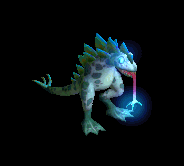 | 冠(90) | 鈍器(70) | スリング(50) | 能力向上1(40) | 弓(30) | HP回復(10) | 銃(30) |